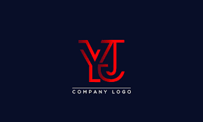

RESUME
YASH G JOGEKAR
Katol, Nagpur, Maharashtra, India, 441302SKILLS:
Web Development: html, css, Java Script, ReactS, Web design standards, Web testing. Sample project: Sample html
- Mobile Development: Native Android Development, Native iOS Development, ReactS Native, Mobile design standards, Mobile testing. Sample Project: Sample app design
- Middle Layer: NodeJS, ExpressJS, API testing Sample Project: Sample
- Database: SQL, PLSQL, database design, database testing, postgrace sample project: project
Automation: celenium, Cypress
Languages Known: C, Java, Swift, JavaSwift, Python
Tools used for Development: JIRA, Github, SourceTree, Postman, figma
IDE: Visual Studio Code, XCode, Android Studio.
Helper Known: goole font, color hunt
Qualifications:
- Graduation : B.Sc
- Post Graduation : M.Sc Physics
- Computer Knowledge: MS-CIT, Typing, Programming Languages
- Other Education : Yog Teacher Diploma
Personal Details:
- Name: YASH GANESH JOGEKAR
- Address: Katol, Dist. Nagpur, Maharashtra, India, 441302